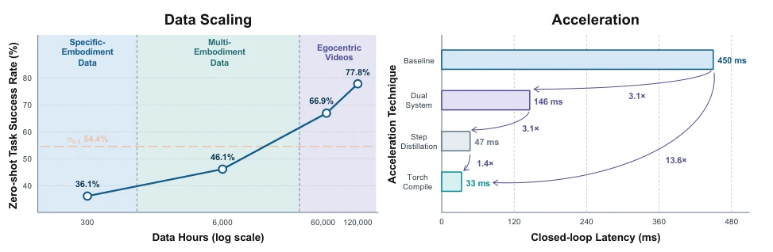
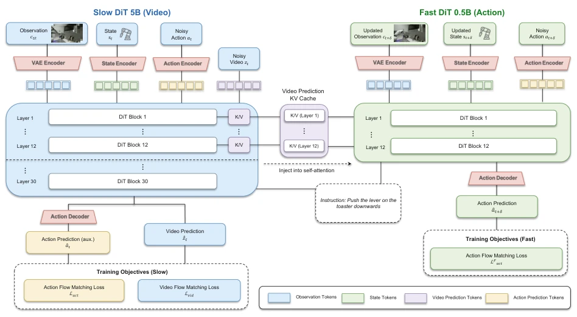
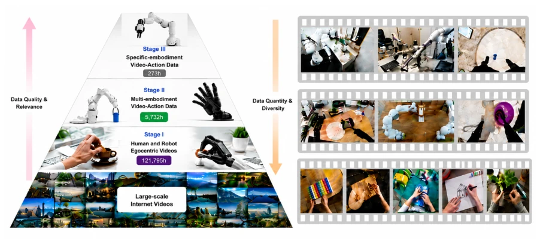
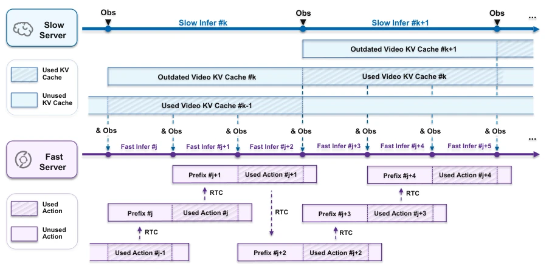
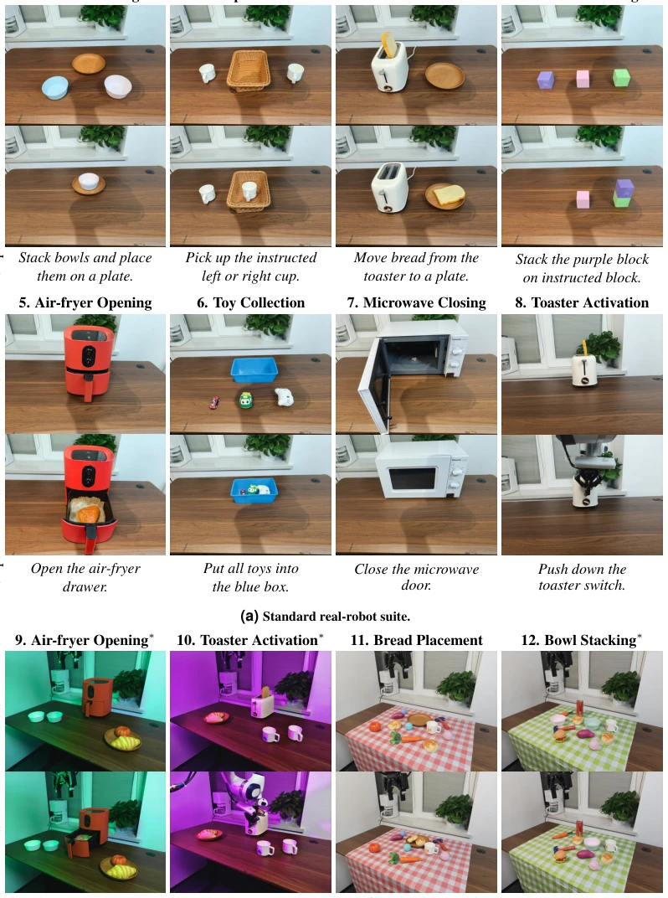
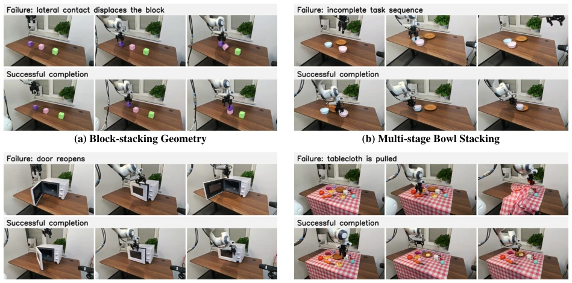
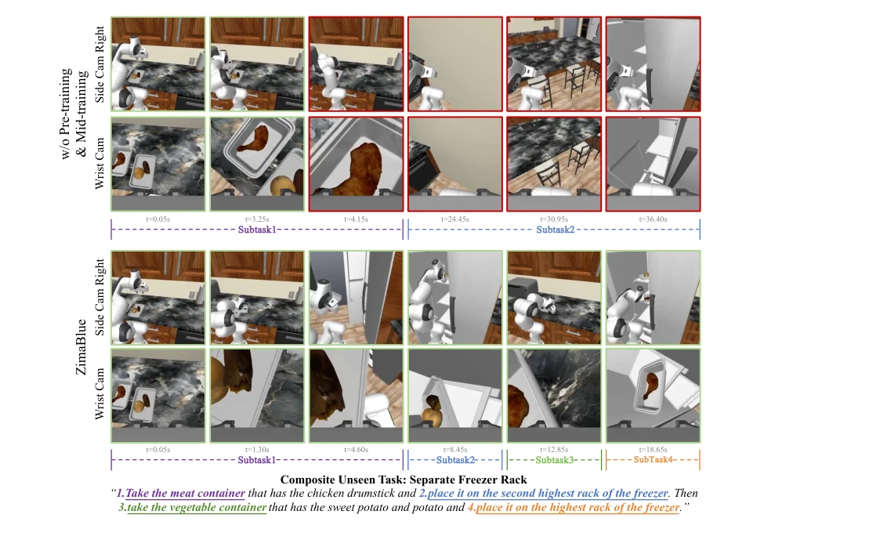
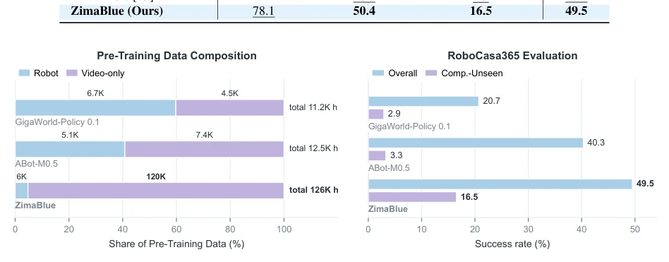
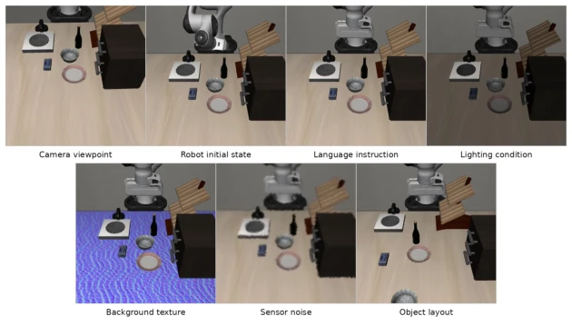
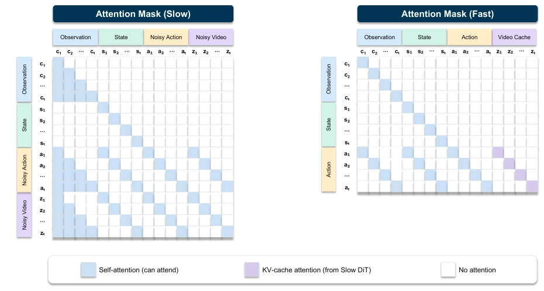

ZimaBlue 这名字起得挺科幻，但核心逻辑很务实：既然机器人数据贵，那就用海量视频凑。他们搞了个三阶段训练，从纯视频到带动作，最后微调，确实把成功率从 36% 拉到了 77%，这 scaling law 看着挺香。不过，5B 的 Slow 模型配合 0.5B 的 Fast 模型，虽然搞了异步推理，但部署起来肯定不轻松，毕竟还要维护两个分支的 KV 缓存同步。而且 12 万小时视频数据，清洗成本估计比训练还高。总的来说，这是把视频生成模型硬套到机器人控制上的成功尝试，但“通用”二字在物理世界还是得打问号，毕竟视频里的物理规律和真机器人还是有 gap 的，尤其是接触丰富的任务，视频里的“假”物理可能误导模型，导致抓取失败。
The name ZimaBlue sounds quite sci-fi, but the core logic is very pragmatic: since robot data is expensive, use massive amounts of video to make up for it. They implemented a three-stage training, from pure video to action-inclusive, finally fine-tuning, indeed pulling the success rate from 36% to 77%, this scaling law looks quite appealing. However, the 5B Slow model paired with the 0.5B Fast model, although asynchronous inference was implemented, deployment is certainly not easy, after all, maintaining KV cache synchronization between the two branches is required. Moreover, for 120,000 hours of video data, the cleaning cost is estimated to be higher than training. Overall, this is a successful attempt to forcibly apply video generation models to robot control, but the word "general" still needs a question mark in the physical world, after all, there is still a gap between physical laws in videos and real robots, especially for contact-rich tasks, the "fake" physics in videos may mislead the model, leading to grasp failure.
The core bottleneck of embodied intelligence is the lack of scalable embodied experience. Although VLA models [1-8] have made great progress in semantic understanding, they lack physical and motion priors, leading to limited generalization in new scenarios [9]. Existing World Action Models (WAMs) [9-15], although attempting to jointly model video and actions, mostly rely on expensive robot trajectory data, or directly use general video generation models, resulting in poor physical consistency [11, 12]. Especially DreamZero [9] and LingBot-VA [11], although introducing video priors, still have deficiencies in real-time control latency and cross-embodiment generalization. Robot trajectory collection is costly and has limited diversity, while first-person video data is rich but lacks action labels; how to convert these unlabeled videos into effective control priors is the key to solving generalization problems. Furthermore, the sim-to-real gap still exists, and pure video pretraining may not fully cover real contact dynamics.

Figure 1: Performance scaling with expanded data and acceleration. Left: Zero-shot task success rate monotonically increases as the training data scales up from specific-embodiment data (36.1% at 300 hours) to multi-embodiment datasets (46.1% at 6,000 hours), and improves up to 77.8% when further incorporating large-scale egocentric video data (120,000 hours). Right: Progressive acceleration techniques cut closed-loop latency from 450 ms to 33 ms on NVIDIA RTX 4090, achieving a 13.6× overall speedup.
ZimaBlue adopts a three-stage training framework. The first stage is video pretraining, utilizing 120,000 hours of human-robot video to learn causal visual dynamics, without relying on action labels. The second stage is video-action intermediate training, introducing multi-embodiment robot trajectories, aligning visual dynamics with actions through a unified 100-dimensional state-action interface. The third stage is specific embodiment fine-tuning, introducing a lightweight Fast branch for real-time control. The core innovation lies in the Slow-Fast dual-system architecture: Slow DiT (5B) is responsible for low-frequency long-horizon world model prediction, generating video KV cache; Fast DiT (0.5B) is responsible for high-frequency action generation, reusing Slow's KV features. Additionally, an asynchronous inference mechanism is adopted, where the Fast branch updates actions using the latest observations without waiting for Slow to complete, combined with distillation and Torch Compile to reduce latency to 33ms. Unified action representation solves compatibility issues for different robot interfaces, adopting Flow Matching loss function to optimize joint prediction of video and actions.

Figure 2: Slow-Fast dual-system architecture. The Slow DiT processes observations, robot state, language instruction, along with noisy video and action tokens, to jointly predict future video latents and their corresponding actions (serves only as auxiliary supervision for video-action alignment). Concurrently, the Fast DiT ingests the updated observation and state, conditioned on the Slow DiT’s video K/V caches, to generate fine-grained final actions for high-frequency closed-loop control.

Figure 3: Data pyramid. Three-stage training progresses from broad visual diversity to deployment-specific embodiment. Stage I (Pre-training) learns general visual dynamics from diverse video sources without action supervision. Stage II (Mid-training) introduces robot actions from multiple embodiments, grounding visual dynamics in cross-embodiment control. Stage III (Post- training) specializes the model on target embodiments and benchmarks for deployment.

Figure 4: Asynchronous inference in the Slow-Fast dual system. The Slow stream operates at a lower frequency and produces future video K/V caches. The Fast stream runs at a higher frequency, using updated observations, states, and Slow K/V guidance to generate action chunks. The generated actions are continuously executed and provide new observations for subsequent updates. “Outdated” marks a Slow video K/V cache based on past observations that is stale at the current timestep, while “prefix” denotes actions already committed for execution from the previous chunk and retained for continuity. The figure is purely schematic.
In real robot zero-shot evaluation, as data expanded from 300 hours to 120,000 hours, success rate improved from 36.1% to 77.8%. On RoboCasa365 and LIBERO-Plus benchmarks, ZimaBlue performs better than other WAM methods, especially with obvious advantages on unseen tasks. Comparison baselines include DreamZero [9] and VLA models such as π0 [4]. Ablation studies show that video pretraining is crucial for unseen task generalization. Regarding latency, through asynchronous inference and distillation, closed-loop latency dropped from 450ms to 33ms, achieving 30Hz control. Data scaling curves show a positive correlation between video scale and performance. Competitive results were also achieved on the RoboTwin 2.0 simulation benchmark, proving cross-domain generalization capability.

Figure 5: Overview of zero-shot real-robot evaluation suites, showing initial/target states and instructions. Top: Standard suite (8 tasks) covering spatial grounding, stacking, object transport, articulated objects, and contact-rich control. Bottom: Perturbed suite (4 tasks) incorporating environmental shifts—appliance tasks feature dynamic glare, flashing light, and distractors, while bread/bowl tasks introduce unseen tablecloths and novel distractor objects.

Figure 6: Representative real-robot rollouts, ordered from left to right. Panel (a) contrasts a lateral placement failure with successful top-down placement under the same pink-target instruction. Panel (b) contrasts an incomplete bowl sequence with placement of the completed stack on the plate. Panel (c) contrasts a door that reopens after contact with a complete microwave closure. Panel (d) contrasts pulling the tablecloth with completed bread placement in the cluttered Perturbed scene.

Figure 8: Qualitative comparison on a Robocasa365 [29] Composite-Unseen task. Green boxes highlight instruction-consistent actions, whereas red boxes denote execution errors. ZimaBlue successfully places both containers onto the designated freezer racks. In contrast, the ablated policy targets an incorrect object and prematurely proceeds to the next stage despite a failed grasp.
其他图片Other Figures

Figure 7: Pre-training Data Composition and Robocasa365 Performance. Left: Comparison of pre-training data volume and ratio between robot trajectories and video-only data across different WAMs. Right: The results on RoboCasa365 demonstrate a direct positive correlation between pre-training video scale and success rates, particularly on Composite-Unseen tasks.

Figure 9: The seven LIBERO-Plus perturbation categories. Initial observations are shown for the same task in our official no-restore SFT evaluation. Language perturbations modify the instruction; quantitative results use all episodes (Table 5).

Figure 10: Attention masks of the Slow and Fast DiTs. Blue cells denote K/V blocks produced within the same branch, purple cells denote video K/V features imported from the Slow DiT, and white cells denote blocked dependencies. Rows are queries and columns are keys and values. In the Slow mask, ci, zi, si, and ai denote the clean video context, noised future-video latent, proprioceptive state, and noised action chunk at step i. In the Fast mask, ci, si, and ai denote the updated observation, state, and prefix-conditioned action chunk at step i, while Kslow is the read-only Slow video K/V cache. Language condition ℓis supplied through cross-attention and omitted from the self-attention diagram for clarity.